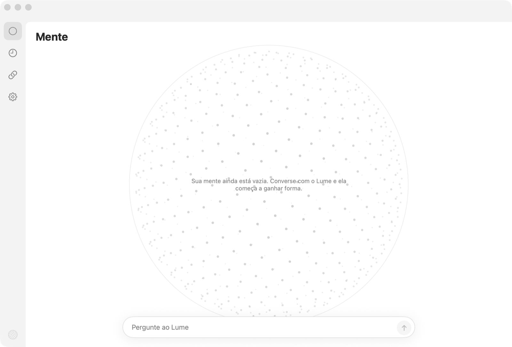

Lume
Uma luz que conhece você.
Um assistente pessoal que mora no seu Mac. Ele lê o que importa pra você, lembra de tudo e responde no Telegram, a qualquer hora.
Em breve para macOSUma luz que conhece você.
Um assistente pessoal que mora no seu Mac. Ele lê o que importa pra você, lembra de tudo e responde no Telegram, a qualquer hora.
Em breve para macOS
iMessage, WhatsApp, Notas e Contatos são lidos direto do seu computador. Nada vai para servidores do Lume, porque eles não existem.
Pergunte, peça, mande áudio. O Lume responde do seu Mac, usando o Claude que você já tem.
Gmail e Agenda, reuniões do Granola, Linear, Otto e as métricas dos seus apps. Um clique cada.
Pessoas, projetos, decisões e preferências viram uma esfera de memória que você vê e edita.
Mandar e-mail, criar evento ou publicar só acontece depois do seu toque em Aprovar.
Rotinas como o resumo da manhã chegam prontas no seu Telegram.